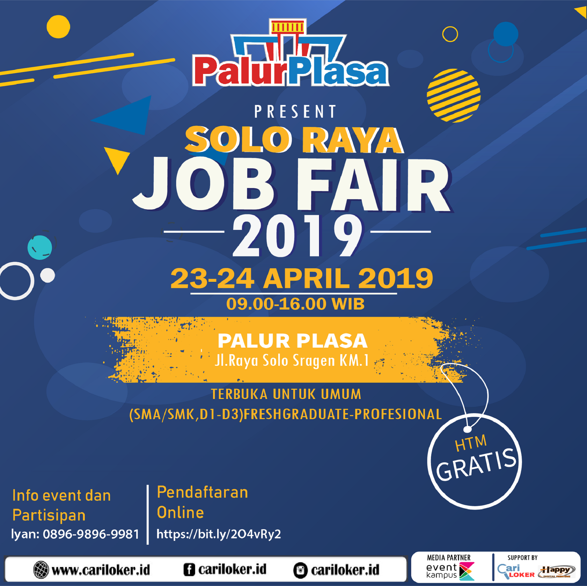

Job Fair Solo Raya
Tempat : Auditorium UNISRI ( Auditorium Universitas Selamet Riyadi, Jl. Sumpah Pemuda No. 18, Banjarsari, Surakarta)
Job fair yang diikuti oleh lebih dari 30 stand perusahaan nasional maupun multi nasional. Menyediakan ribuan lowongan pekerjaan, mulai dari lulusan SMA/SMK, D1-D4, S1-S2

Persyaratan Pencari Kerja :
• Surat lamaran lengkap
• Fotokopi KTP / identitas lain
• Fotokopi ijazah terakhir / transkip nilai
• Pas Photo 3×4 untuk tiap surat lamaran
• Daftar riwayat hidup (CV)
• SKCK (tidak wajib)
• Pakaian bebas, yang penting rapi dan sopan
Ayo…!
Tunggu apa lagi, segera daftarkan diri anda dan dapatkan pekerjaan impian
Link pendaftaran: https://bit.ly/2O4vRy2
Info event dan partisipan :
Iyan
0 89 69 89 69 98 1 (wa/telp)
Website: cariloker.id
Instagram: cariloker.id